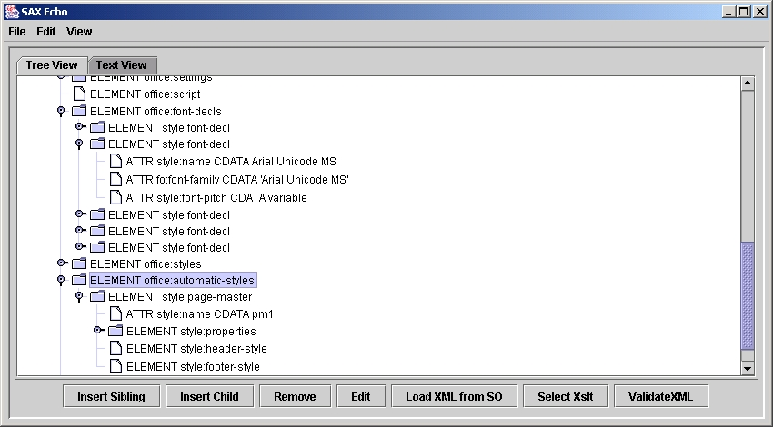
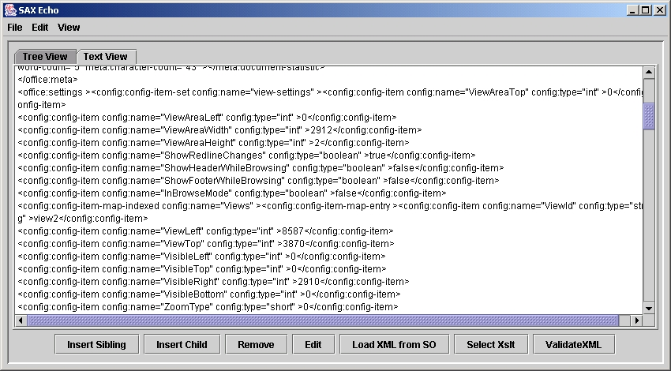

SAXEcho
Project Owners: Michael Mi, Aidan Butler
(please use the provided mailing lists for discussion of the XML based file format and related issues.)
Overview
SAXEcho is an application which runs in parallel to OpenOffice and shows the XML representation of the current document. The application was created by Michael Mi, and has been more recently been expanded by Aidan Butler. The code is Java based, and works by attaching to a OOo process which has been set to listen on a specific port.
Functionality
The SAXEcho program supports the following:
- Displaying the XML content of a currently opened OOo document. The result is displayed as plain text and an XML tree structure.
- Modification of the XML structure by adding, editing and removing nodes.
- The Assignment of a DTD to the XML representation.
- The Validation of the displayed XML.
- The use of an XSLT style-sheet, to display a transformed version of an OOo document that is currently open.
Usage Instructions
Before you start, you will need the following:
- An OpenOffice.org installation
- Java 1.3 or greater. If you have an installation that is less than 1.4, you will also need Xalan and an external parser e.g. Xerces or Crimson
- The SAXEcho source code which is available here
To compile the SAXEcho program do the following:
Windows:
- Edit the set office = line to point to your OOo installation
- Execute the SAXEcho.bat file
Unix:
- Set you CLASSPATH to include all of the jar files in your <OOo-install-dir>/program/classes/ directory
- execute javac SAXEcho.java
- execute java SAXEcho
Alternatively, the SAXEcho/source directory contains a dmake makefile.mk, which can be used to build the source.
Configuring OpenOffice.org for usage with SAXEcho
In order for the SAXEcho program to work with OOo, you must start OpenOffice with the following switches:
%soffice -accept=socket,host=localhost,port=2002;urp;
SAXEcho Displaying an OOo Document in Tree form

SAXEcho Displaying an OOo document in Plain Text form
